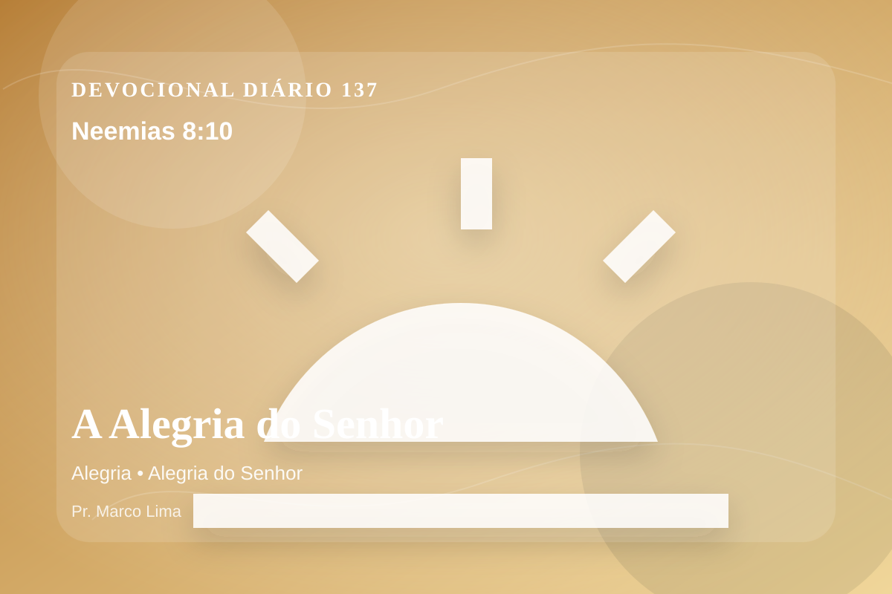

A Alegria do Senhor
Disse-lhes mais: Ide, comei as gorduras, e bebei as doçuras, e enviai porções aos que não têm nada preparado para si; porque este dia é consagrado ao nosso Senhor. Portanto não vos entristeçais, pois a alegria do Senhor é a vossa força.
Reflexão
Dia 137: A leitura de hoje convida você a diminuir o ruído, abrir a Bíblia com humildade e deixar que Neemias 8:10 fale com profundidade.
A alegria do Senhor nasce depois de ouvir a Palavra com arrependimento. Não é euforia superficial, mas força para recomeçar debaixo da graça.
No dia 137 do plano anual, o tema de alegria precisa ser recebido com simplicidade e seriedade. Quando essa verdade encontra resistência dentro de nós, é justamente ali que o Espírito deseja trabalhar. Este tema aponta para a maneira como Deus forma o coração do Seu povo por meio da Palavra. A aplicação correta não nasce de frases soltas, mas de uma leitura reverente, contextual e obediente do texto bíblico.
A Palavra convida você a abandonar desculpas. Onde houver pecado, confesse; onde houver incredulidade, peça fé; onde houver cansaço, volte-se para Cristo.
Arrependimento não é apenas sentir peso na consciência; é voltar-se para Deus, abandonar o caminho que entristece o Senhor e confiar que a graça de Cristo é suficiente para perdoar e transformar.
Este é o evangelho que sustenta toda aplicação: Jesus Cristo morreu pelos pecadores, ressuscitou em vitória e chama cada pessoa a responder com fé, arrependimento e uma vida rendida ao Seu senhorio.
Deus não chama você para uma religiosidade sem vida, mas para reconciliação com Ele por meio de Cristo. Essa reconciliação começa com fé humilde e arrependimento sincero.
Se o texto trouxe consolo, adore. Se trouxe confronto, arrependa-se. Se trouxe direção, obedeça. Em tudo, volte os olhos para Cristo.
Aplicação Prática
- Leia Neemias 8:10 lentamente e destaque uma palavra ou expressão central do texto.
- Confesse a Deus um pecado, resistência ou frieza espiritual que esta Palavra revelou.
- Declare sua fé em Jesus Cristo e pratique hoje uma atitude concreta de arrependimento e obediência.
Para Orar
Senhor Deus, eu recebo a Tua Palavra em Neemias 8:10 com reverência. Reconheço que preciso de arrependimento, perdão e nova vida. Creio que Jesus Cristo morreu pelos meus pecados e ressuscitou para me salvar. Lava meu coração, governa minha vida e conduz-me em obediência simples ao Teu evangelho. Em nome de Jesus. Amém.
{kind=link}